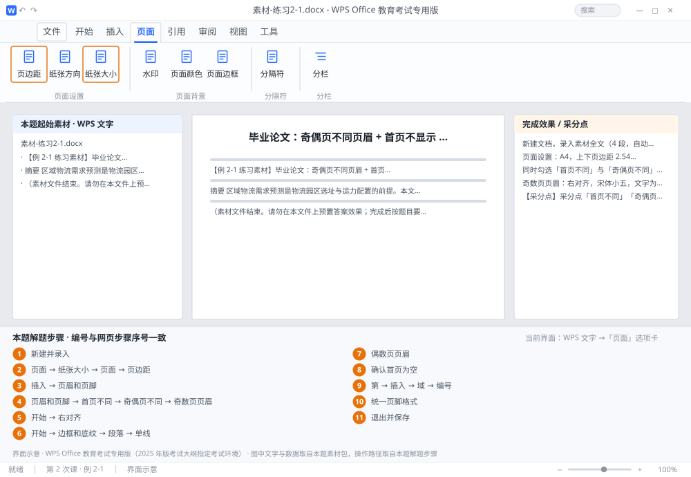

完成比对文档 · 例 2-1
毕业论文：奇偶页不同页眉 + 首页不显示 + 第 X 页 共 Y 页 ｜ 第 2 次课 / WPS 文字 ｜ 网页：实操-文字2.html ｜ 考试环境：WPS Office 教育考试专用版（2025 年版考试大纲指定考试环境）
用途 本页按修订后的题目要求与解题步骤生成，是交卷自查的结果基准：
逐项列出每一步应出现的可复核结果，配合模拟操作截图与解题结果文件使用。
它不是素材包的一部分，不会预置答案动作；起始素材仍从本题素材包下载。
一、本题起始素材包
目录：练习素材/练习2-1-奇偶页页眉/ ｜
下载包：练习素材/下载/练习2-1-奇偶页页眉.zip
二、题目要求
- 新建文档，录入素材全文（4 段，自动排到 2 页以上）。
- 页面设置：A4，上下页边距 2.54 厘米、左右 3.17 厘米。
- 同时勾选「首页不同」与「奇偶页不同」，首页不显示页眉页脚。
- 奇数页页眉：右对齐，宋体小五，文字为「大连财经学院 · 2026 届毕业设计（论文）」，并加 0.75 磅单线下边框。
- 偶数页页眉：左对齐，宋体小五，文字为论文题目「基于大数据的区域物流需求预测研究」。
- 页脚：居中，「第 X 页 共 Y 页」，其中 X、Y 为域，宋体小五。
- 保存为 学号-姓名-练习2-1.docx。
三、解题步骤（编号与下方核对表、截图编号一致）
- 新建并录入。Ctrl+N 新建，按本题素材包中的起始文件逐段录入（每段末尾按一次 Enter，段首不要敲空格）。
- 设页面。「页面」→「纸张大小」→ A4；「页面」→「页边距」→「自定义页边距」→ 上、下填 2.54，左、右填 3.17 → 确定。
- 进入页眉编辑。「插入」→「页眉和页脚」；也可以直接双击页面顶部的页眉区域，两种方式等效。
- 勾两个复选框。在「页眉和页脚」选项卡中，勾选「首页不同」与「奇偶页不同」。勾选后，光标所在的奇数页页眉会显示「奇数页页眉」提示。
- 设奇数页页眉。在页眉中输入「大连财经学院 · 2026 届毕业设计（论文）」→「开始」→ 宋体、小五 → 点「右对齐」（Ctrl+R）。
- 加页眉横线（关键）。光标留在页眉段落内 →「开始」→ 边框按钮右侧下拉箭头 →「边框和底纹」→ 应用于「段落」→ 线型「单线」、宽度 0.75 磅 → 在预览图下方点一下加下边框 → 确定。不要用 Ctrl+U 下划线，那是给文字加线，长度随文字走，评分不认。
- 设偶数页页眉。向下滚动到第 2 页页眉，看到「偶数页页眉」标签后，输入论文题目 → 宋体小五 → 左对齐（Ctrl+L）。
- 确认首页为空。回到第 1 页，首页页眉与页脚应为空白；若有残留内容，全部删掉。
- 插入页码域。定位到页脚 → 输入「第 」→「插入」→「域」→ 类别「编号」→ 域名 Page → 格式选「1,2,3」→ 确定；接着输入「 页 共 」→ 再插入域 NumPages → 输入「 页」。
- 统一页脚格式。选中页脚整段 → 宋体、小五 → 居中（Ctrl+E）。
- 退出并保存。双击正文任意位置退出编辑 → F12 另存为 学号-姓名-练习2-1.docx。
四、完成效果 / 采分点
采分点「首页不同」「奇偶页不同」均已勾选（2 项） · 奇数页页眉右对齐且文字完全一致 · 页眉下边框为 0.75 磅段落边框（非下划线） · 偶数页页眉左对齐 · 页脚含 Page 与 NumPages 两个域且居中 · 首页无页眉页脚 · 页边距 2.54/3.17 · 文件名与格式正确
五、逐项完成核对表
| 步骤 | 关键操作路径 | 应出现的结果（可复核） |
|---|
| 1 | 新建并录入 | 新建并录入 |
| 2 | 设页面 | 「页面」、「纸张大小」、A4、「页边距」、「自定义页边距」 |
| 3 | 进入页眉编辑 | 「插入」、「页眉和页脚」 |
| 4 | 勾两个复选框 | 「页眉和页脚」、「首页不同」、「奇偶页不同」、「奇数页页眉」 |
| 5 | 设奇数页页眉 | 「开始」、「右对齐」 |
| 6 | 加页眉横线（关键） | 「开始」、「边框和底纹」、「段落」、「单线」、0.75 磅 |
| 7 | 设偶数页页眉 | 2 页、「偶数页页眉」 |
| 8 | 确认首页为空 | 1 页 |
| 9 | 插入页码域 | 「第 」、「插入」、「域」、「编号」、「1,2,3」 |
| 10 | 统一页脚格式 | 统一页脚格式 |
| 11 | 退出并保存 | F12、学号-姓名-练习2-1.docx |
六、模拟操作截图

界面示意 · WPS Office 教育考试专用版 · 橙色编号与本题解题步骤序号一致；
图中文字与数据取自本题素材包，功能入口取自本题解题步骤。
核对方法：按网页解题步骤完成并另存自己的成稿后，逐行比对本表第 3 列的
参数、公式、区域、文件名与对象数量；再对照网页「完成效果 / 采分点」检查版式是否一致。